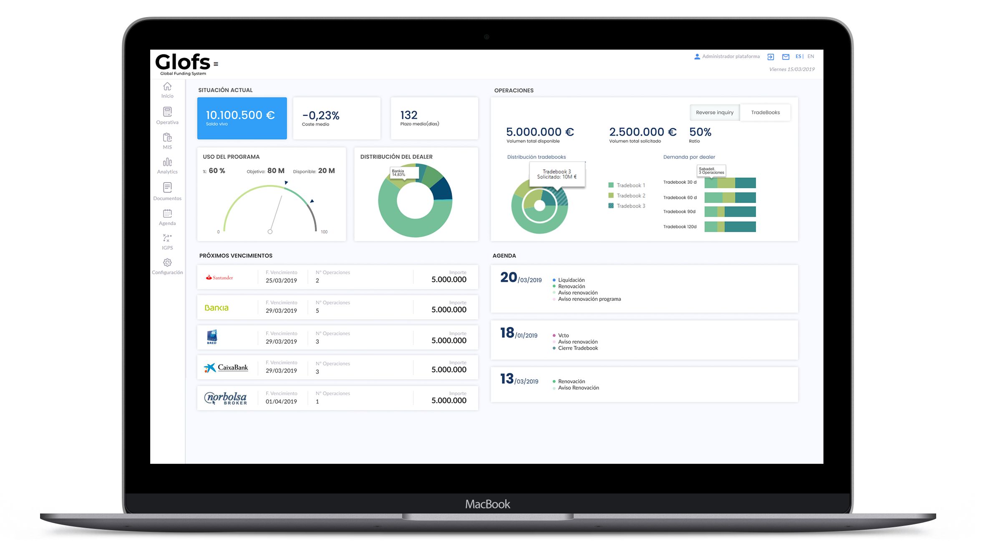

GLOFS. Global Funding System
Prototipado | Diseño | HTML | CSS | Angular
Descripción
Proyecto: Glofs (Global Funding System) es una plataforma digital para la emisión de papel comercial creada por PKF Attest DCM.
Se trata de una plataforma que conecta de manera directa, ágil y confidencial a los emisores con los dealers y el resto de agentes implicados en la emisión y listing de papel comercial.
Esta plataforma simplifica, digitaliza y automatiza la mayoría de los procesos manuales involucrados en la emisión de papel comercial, optimizando la forma en que el papel comercial es gestionado y permitiendo a los emisores acceder al mercado de manera ágil, reduciendo costes y minimizando el riesgo operativo.
FUNCIONES
- UX/UI Design
- Visual Design
- Front end designer (HTML/SASS/JAVASCRIPT)
Problemática
Mostrar una gran cantidad de datos financieros ya de por si complejos de una forma visualmente atractiva y con una experiencia de uso facil.
El proceso
Se realiza un benchamarking de diferentes aplicaciones y páginas web del sector financiero y fintechs para observar buenas prácticas y tendencias en la forma de mostrar y visualizar datos complejos.
Se opta por mostrar un dashboard con los datos básicos de las operaciones en función de cada perfil de acceso
El producto owner y analista funcional me trasladan las funcionalidades necesarias de la herramienta y su visión de cómo debería ser cada pantalla
Una vez estudiada esta información se realizan los wireframes de las pantallas para trasladar las funcionalidades solicitadas en los componentes web necesarios
Prototipo básico Ver prototipo en Atomic Actualmente en desarrollo
El siguiente paso es traducir los diseños a HTML y SASS para que se pueda empezar a programar.
Se genera un "design system" para mejorar la consistencia de la aplicación y facilitar el trabajo de los programadores
Una vez realizado todo el desarrollo de la aplicación en angular trabajo sobre ella para retocar los desajustes producidos durante la fase de desarrollo.
